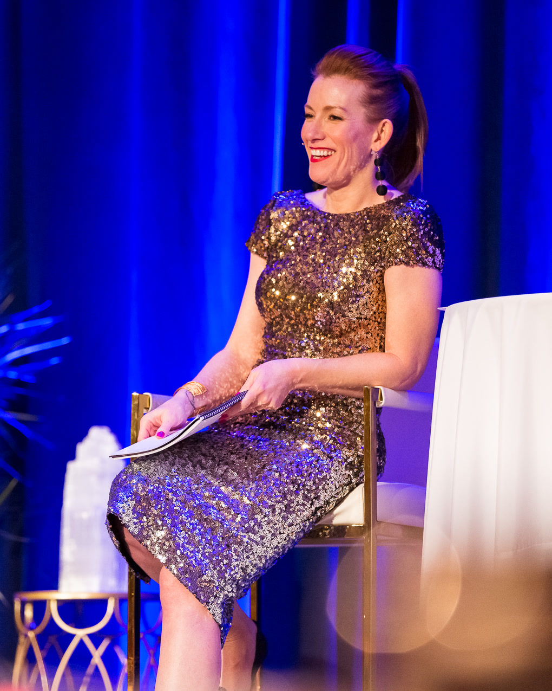
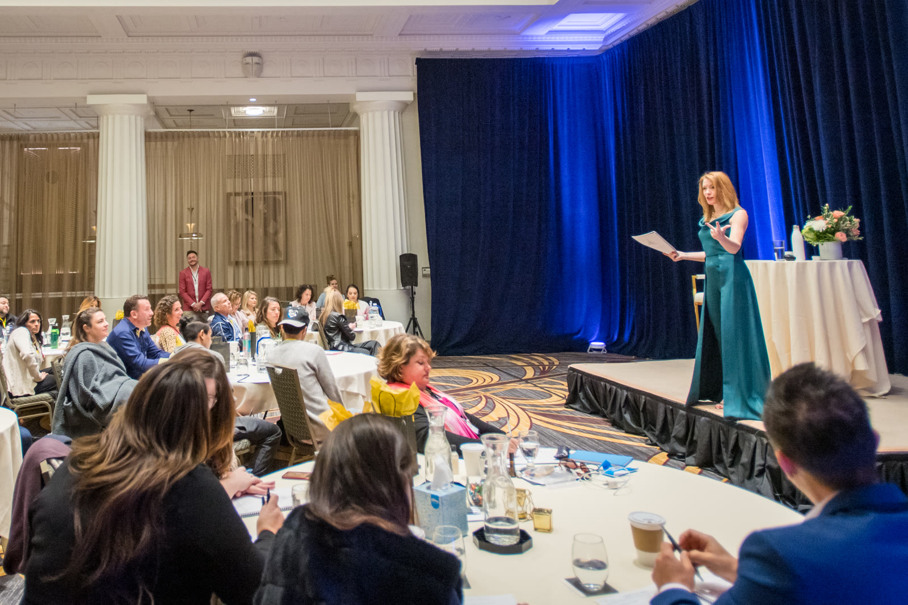
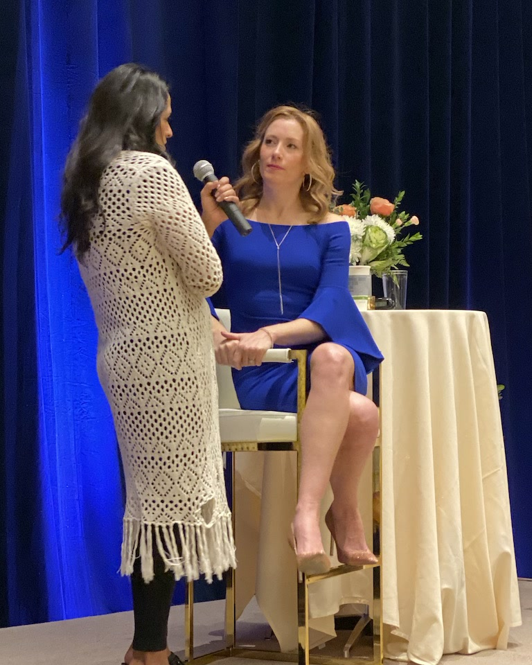

Divine Self Mastery · 12 months
A year to clear the pattern and create life on the other side.
Divine Self Mastery is the flagship program of The Beyond Human Method, a year you dedicate to yourself, to the change you want to make happen and to a life that's unimaginable right now. You'll clear your primary pattern at the root, create a life you actually want to live and practice living it with a group of others moving through the same process. This is your chance to become who you know you can be.

Understanding yourself can happen in a weekend, but changing yourself takes practice.
Picture a fish that's lived its whole life inside one fishbowl: the same environment, the same other fish and the same murky water, without even knowing it's swimming in sludge. Maybe it knows there's an ocean out there, beautiful and full of new and different creatures, but it keeps swimming in the mucky water, because the bowl is all it's ever known.
Your current fishbowl is your current paradigm.
The place you want to get to is a completely new paradigm, and it takes new ways of thinking, feeling and acting until they become your normal way of life. Getting there takes practice. It will be uncomfortable at first, but that discomfort is exactly how you know you're making the change. A year with this methodology gives you the exact amount of time and support you need to stay with it past the point where every other program let you off the hook, stagnant and the same.

Everything you need to change, so you won't be able to hide out.
- LIVE Activation Sessions with me: three 90-minute clarity and facilitation sessions a month on Wednesdays, so the clearing happens live, in real time, with me holding the space for you.
- Twelve Divine Self Mastery Blueprints: one for each month, with video, audio, guided practices and extra sessions, so you're guided through that month's training and shifts step by step.
- The full recording library, so even if you don't make it live, you still receive all of the activation and energetic change; listen on the go, on a walk, in the car, wherever you are.
- A private community of people doing the same work, so you're never doing this alone again.
- A private 1:1 session with me in your first month ($600 value), so your intentions are anchored from day one.
How the twelve months unfold.
Month 1: Learning energy, intentions and a daily practice
The first month is about easing into the change you're about to undergo. You'll learn energy, set your intentions for the year and begin building a morning practice that everything else builds on.
Month 2: Nervous system recalibration
Your body calms itself long enough to accept the changes you're about to make; without this, you may fight yourself the entire year. Many of our current participants will tell you that coming back to the nervous system recalibration is the secret sauce that makes everything else click into place.
Months 3 to 6: Alignment and clearing
The heart of the program. You'll learn the techniques to align, so the changes stick, and clear the energies rooted in your lineage, your family, your heritage and maybe even past lifetimes, so all of that stuck energy clears and you start to live the reality you really want.
Months 7 and 8: Creation and love
You'll learn to co-create with universal source energy, so you stop forcing outcomes and start calling in what you want with ease. Then you'll turn that energy toward love: how you give it, how you receive it and how much of it you allow in.
Months 9 and 10: Intuition and trust
You'll learn to hear your intuition clearly, tell it apart from fear and act on it, then let go of your need to control and trust what you know is true for you. This is where life starts to feel easy.
Months 11 and 12: Money
The year closes by applying every principle to money: freeing yourself from your money past, stepping into a new abundance paradigm and aligning in your power with wealth, so the way you earn, spend and receive reflects who you've become.
To be able to clear that, it clears my field, but it also clears my children's field and their lineage. That's even more impactful to me.
When the root clears, the whole life moves.
Since working with Tamara, I earned $168k in commission in one day, more than any previous year total.
Now after 3 years, I've moved through my divorce, found a new job that I love, and created a completely new life. I feel fulfilled and balanced, like there is magic happening every day.
After a year and a half of focus on energetic self mastery, it's not like I have to go and do clearing. My automatic way of being is just more surrendered, more aware of my alignment.
Results are individual and depend on the work each person puts in. These are their words, shared with permission.
Optional add-ons
Go deeper in the areas that matter most to you.
Divine Self Mastery stands on its own. If you want to take the work further, these two trainings can be added to your year.
Mastering the Energetics of Business
For anyone building or growing a business, a four-module training that applies the method to revenue, clients, pricing and decisions. When the founder's pattern clears, the business stops repeating it too.
After being in Tamara's program for 1 month, I brought in 4 times the number of clients, more than all of last year, without doing any more work.
Divine Feminine Mastery
Four Divine Feminine Activation Sessions that take you on a deeper journey to activate your own divine feminine archetype, your connection to your power and your ability to receive more, in love, in money and in life.
I met my husband. He treats me like a goddess. And I've increased my inflows at least four times.
For established founders
Work privately with me
Some clients run successful companies and want to do this work privately, one-on-one with me, at their own pace, at their own level and with my private expertise. The commitment is still a year, with three private sessions a month, quarterly half-day intensives and ongoing access between all of it.
Private work also begins with the Audit, and we decide together which container fits best.

Questions about Divine Self Mastery…
How do I join?
Every enrollment starts with the Energetic Alignment Audit, and it's folded into every pathway moving forward. The Audit used to take months of group coaching sessions; now it's accelerated and offered on its own, if you desire, and it gives you a taste of the program, the methodology, my work and how I facilitate change. The best part is, if you don't want to move forward with any other program, you've still received an amazing session that maps out the exact root cause of all the shenanigans running your life.
When does the next group start?
The next cohort begins January 7, 2027, and a new cohort opens every quarter after that. Each one is capped at twelve people.
How much time does it take?
You'll create a daily practice, morning and/or night, to begin making the changes needed to live the life you love. Our live sessions are 90 minutes and recorded for your convenience, and they're meant to be woven into your day: your drive time, your walks, your workouts, while you're doing the dishes or the laundry, so you're listening and taking in the content all the time.
What if the live session times don't fit my schedule?
That's okay. Every session is recorded, and you can listen on the go. I've had clients I've never met and never seen on camera, and I get emails about the success they've had just from the program.
What happens after the first year?
Many clients continue on to a second and third year, which go deeper into energetic self mastery and mastering The Beyond Human Method. Graduates can always stay connected through the graduate membership as well.
Is there a self-paced option?
Yes. Rise of the Divine is a self-paced accelerator with the core clearings and intuition work, for $997 with a 7-day money-back guarantee. See Rise of the Divine.
Is there a guarantee?
Yes. Divine Self Mastery has a money-back guarantee, so if you see no change and you've done the program exactly the way it's been designed, I'm happy to refund your investment. The terms are spelled out in your enrollment agreement before you commit.